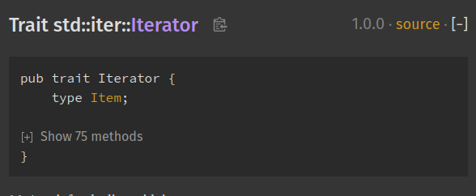
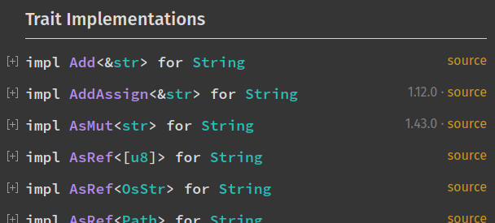

What is rustdoc?
The standard Rust distribution ships with a tool called rustdoc. Its job is
to generate documentation for Rust projects. On a fundamental level, Rustdoc
takes as an argument either a crate root or a Markdown file, and produces HTML,
CSS, and JavaScript.
Basic usage
Let's give it a try! Create a new project with Cargo:
$ cargo new docs --lib
$ cd docs
In src/lib.rs, Cargo has generated some sample code. Delete
it and replace it with this:
#![allow(unused)] fn main() { /// foo is a function fn foo() {} }
Let's run rustdoc on our code. To do so, we can call it with the path to
our crate root like this:
$ rustdoc src/lib.rs
This will create a new directory, doc, with a website inside! In our case,
the main page is located in doc/lib/index.html. If you open that up in
a web browser, you will see a page with a search bar, and "Crate lib" at the
top, with no contents.
Configuring rustdoc
There are two problems with this: first, why does it think that our package is named "lib"? Second, why does it not have any contents?
The first problem is due to rustdoc trying to be helpful; like rustc,
it assumes that our crate's name is the name of the file for the crate
root. To fix this, we can pass in a command-line flag:
$ rustdoc src/lib.rs --crate-name docs
Now, doc/docs/index.html will be generated, and the page says "Crate docs."
For the second issue, it is because our function foo is not public; rustdoc
defaults to generating documentation for only public functions. If we change
our code...
#![allow(unused)] fn main() { /// foo is a function pub fn foo() {} }
... and then re-run rustdoc:
$ rustdoc src/lib.rs --crate-name docs
We now have some generated documentation. Open up doc/docs/index.html and
check it out! It should show a link to the foo function's page, which
is located at doc/docs/fn.foo.html. On that page, you'll see the "foo is
a function" we put inside the documentation comment in our crate.
Using rustdoc with Cargo
Cargo also has integration with rustdoc to make it easier to generate
docs. Instead of the rustdoc command, we could have done this:
$ cargo doc
Internally, this calls out to rustdoc like this:
$ rustdoc --crate-name docs src/lib.rs -o <path>/docs/target/doc -L
dependency=<path>/docs/target/debug/deps
You can see this with cargo doc --verbose.
It generates the correct --crate-name for us, as well as pointing to
src/lib.rs. But what about those other arguments?
-ocontrols the output of our docs. Instead of a top-leveldocdirectory, notice that Cargo puts generated documentation undertarget. That is the idiomatic place for generated files in Cargo projects.-Lflag helps rustdoc find the dependencies your code relies on. If our project used dependencies, we would get documentation for them as well!
Outer and inner documentation
The /// syntax is used to document the item present after it.
That's why it is called an outer documentation.
There is another syntax: //!, which is used to document the
item it is present inside. It is called an inner documentation.
It is often used when documenting the entire crate,
because nothing comes before it: it is the root of the crate.
So in order to document an entire crate, you need to use //! syntax.
For example:
#![allow(unused)] fn main() { //! This is my first rust crate }
When used in the crate root, it documents the item it is inside, which is the crate itself.
For more information about the //! syntax, see the Book.
Using standalone Markdown files
rustdoc can also generate HTML from standalone Markdown files. Let' s
give it a try: create a README.md file with these contents:
# Docs
This is a project to test out `rustdoc`.
[Here is a link!](https://www.rust-lang.org)
## Example
```rust
fn foo() -> i32 {
1 + 1
}
```
And call rustdoc on it:
$ rustdoc README.md
You will find an HTML file in docs/doc/README.html generated from its
Markdown contents.
Cargo currently does not understand standalone Markdown files, unfortunately.
Summary
This covers the simplest use-cases of rustdoc. The rest of this book will
explain all of the options that rustdoc has, and how to use them.
Command-line arguments
Here's the list of arguments you can pass to rustdoc:
-h/--help: help
Using this flag looks like this:
$ rustdoc -h
$ rustdoc --help
This will show rustdoc's built-in help, which largely consists of
a list of possible command-line flags.
Some of rustdoc's flags are unstable; this page only shows stable
options, --help will show them all.
-V/--version: version information
Using this flag looks like this:
$ rustdoc -V
$ rustdoc --version
This will show rustdoc's version, which will look something
like this:
rustdoc 1.17.0 (56124baa9 2017-04-24)
-v/--verbose: more verbose output
Using this flag looks like this:
$ rustdoc -v src/lib.rs
$ rustdoc --verbose src/lib.rs
This enables "verbose mode", which means that more information will be written
to standard out. What is written depends on the other flags you've passed in.
For example, with --version:
$ rustdoc --verbose --version
rustdoc 1.17.0 (56124baa9 2017-04-24)
binary: rustdoc
commit-hash: hash
commit-date: date
host: host-triple
release: 1.17.0
LLVM version: 3.9
-o/--out-dir: output directory path
Using this flag looks like this:
$ rustdoc src/lib.rs -o target/doc
$ rustdoc src/lib.rs --out-dir target/doc
By default, rustdoc's output appears in a directory named doc in
the current working directory. With this flag, it will place all output
into the directory you specify.
--crate-name: controlling the name of the crate
Using this flag looks like this:
$ rustdoc src/lib.rs --crate-name mycrate
By default, rustdoc assumes that the name of your crate is the same name
as the .rs file. --crate-name lets you override this assumption with
whatever name you choose.
--document-private-items: Show items that are not public
Using this flag looks like this:
$ rustdoc src/lib.rs --document-private-items
By default, rustdoc only documents items that are publicly reachable.
#![allow(unused)] fn main() { pub fn public() {} // this item is public and will be documented mod private { // this item is private and will not be documented pub fn unreachable() {} // this item is public, but unreachable, so it will not be documented } }
--document-private-items documents all items, even if they're not public.
-L/--library-path: where to look for dependencies
Using this flag looks like this:
$ rustdoc src/lib.rs -L target/debug/deps
$ rustdoc src/lib.rs --library-path target/debug/deps
If your crate has dependencies, rustdoc needs to know where to find them.
Passing --library-path gives rustdoc a list of places to look for these
dependencies.
This flag takes any number of directories as its argument, and will use all of them when searching.
--cfg: passing configuration flags
Using this flag looks like this:
$ rustdoc src/lib.rs --cfg feature="foo"
This flag accepts the same values as rustc --cfg, and uses it to configure
compilation. The example above uses feature, but any of the cfg values
are acceptable.
--extern: specify a dependency's location
Using this flag looks like this:
$ rustdoc src/lib.rs --extern lazy-static=/path/to/lazy-static
Similar to --library-path, --extern is about specifying the location
of a dependency. --library-path provides directories to search in, --extern
instead lets you specify exactly which dependency is located where.
-C/--codegen: pass codegen options to rustc
Using this flag looks like this:
$ rustdoc src/lib.rs -C target_feature=+avx
$ rustdoc src/lib.rs --codegen target_feature=+avx
$ rustdoc --test src/lib.rs -C target_feature=+avx
$ rustdoc --test src/lib.rs --codegen target_feature=+avx
$ rustdoc --test README.md -C target_feature=+avx
$ rustdoc --test README.md --codegen target_feature=+avx
When rustdoc generates documentation, looks for documentation tests, or executes documentation tests, it needs to compile some rust code, at least part-way. This flag allows you to tell rustdoc to provide some extra codegen options to rustc when it runs these compilations. Most of the time, these options won't affect a regular documentation run, but if something depends on target features to be enabled, or documentation tests need to use some additional options, this flag allows you to affect that.
The arguments to this flag are the same as those for the -C flag on rustc. Run rustc -C help to
get the full list.
--test: run code examples as tests
Using this flag looks like this:
$ rustdoc src/lib.rs --test
This flag will run your code examples as tests. For more, see the chapter on documentation tests.
See also --test-args and --test-run-directory.
--test-args: pass options to test runner
Using this flag looks like this:
$ rustdoc src/lib.rs --test --test-args ignored
This flag will pass options to the test runner when running documentation tests. For more, see the chapter on documentation tests.
See also --test.
--test-run-directory: run code examples in a specific directory
Using this flag looks like this:
$ rustdoc src/lib.rs --test --test-run-directory=/path/to/working/directory
This flag will run your code examples in the specified working directory. For more, see the chapter on documentation tests.
See also --test.
--target: generate documentation for the specified target triple
Using this flag looks like this:
$ rustdoc src/lib.rs --target x86_64-pc-windows-gnu
Similar to the --target flag for rustc, this generates documentation
for a target triple that's different than your host triple.
All of the usual caveats of cross-compiling code apply.
--default-theme: set the default theme
Using this flag looks like this:
$ rustdoc src/lib.rs --default-theme=ayu
Sets the default theme (for users whose browser has not remembered a previous theme selection from the on-page theme picker).
The supplied value should be the lowercase version of the theme name. The set of available themes can be seen in the theme picker in the generated output.
Note that the set of available themes - and their appearance - is not
necessarily stable from one rustdoc version to the next. If the
requested theme does not exist, the builtin default (currently
light) is used instead.
--markdown-css: include more CSS files when rendering markdown
Using this flag looks like this:
$ rustdoc README.md --markdown-css foo.css
When rendering Markdown files, this will create a <link> element in the
<head> section of the generated HTML. For example, with the invocation above,
<link rel="stylesheet" type="text/css" href="foo.css">
will be added.
When rendering Rust files, this flag is ignored.
--html-in-header: include more HTML in
Using this flag looks like this:
$ rustdoc src/lib.rs --html-in-header header.html
$ rustdoc README.md --html-in-header header.html
This flag takes a list of files, and inserts them into the <head> section of
the rendered documentation.
--html-before-content: include more HTML before the content
Using this flag looks like this:
$ rustdoc src/lib.rs --html-before-content extra.html
$ rustdoc README.md --html-before-content extra.html
This flag takes a list of files, and inserts them inside the <body> tag but
before the other content rustdoc would normally produce in the rendered
documentation.
--html-after-content: include more HTML after the content
Using this flag looks like this:
$ rustdoc src/lib.rs --html-after-content extra.html
$ rustdoc README.md --html-after-content extra.html
This flag takes a list of files, and inserts them before the </body> tag but
after the other content rustdoc would normally produce in the rendered
documentation.
--markdown-playground-url: control the location of the playground
Using this flag looks like this:
$ rustdoc README.md --markdown-playground-url https://play.rust-lang.org/
When rendering a Markdown file, this flag gives the base URL of the Rust
Playground, to use for generating Run buttons.
--markdown-no-toc: don't generate a table of contents
Using this flag looks like this:
$ rustdoc README.md --markdown-no-toc
When generating documentation from a Markdown file, by default, rustdoc will
generate a table of contents. This flag suppresses that, and no TOC will be
generated.
-e/--extend-css: extend rustdoc's CSS
Using this flag looks like this:
$ rustdoc src/lib.rs -e extra.css
$ rustdoc src/lib.rs --extend-css extra.css
With this flag, the contents of the files you pass are included at the bottom
of the theme.css file.
--sysroot: override the system root
Using this flag looks like this:
$ rustdoc src/lib.rs --sysroot /path/to/sysroot
Similar to rustc --sysroot, this lets you change the sysroot rustdoc uses
when compiling your code.
--edition: control the edition of docs and doctests
Using this flag looks like this:
$ rustdoc src/lib.rs --edition 2018
$ rustdoc --test src/lib.rs --edition 2018
This flag allows rustdoc to treat your rust code as the given edition. It will compile doctests with
the given edition as well. As with rustc, the default edition that rustdoc will use is 2015
(the first edition).
--theme: add a theme to the documentation output
Using this flag looks like this:
$ rustdoc src/lib.rs --theme /path/to/your/custom-theme.css
rustdoc's default output includes two themes: light (the default) and
dark. This flag allows you to add custom themes to the output. Giving a CSS
file to this flag adds it to your documentation as an additional theme choice.
The theme's name is determined by its filename; a theme file named
custom-theme.css will add a theme named custom-theme to the documentation.
--check-theme: verify custom themes against the default theme
Using this flag looks like this:
$ rustdoc --check-theme /path/to/your/custom-theme.css
While rustdoc's HTML output is more-or-less consistent between versions, there
is no guarantee that a theme file will have the same effect. The --theme flag
will still allow you to add the theme to your documentation, but to ensure that
your theme works as expected, you can use this flag to verify that it implements
the same CSS rules as the official light theme.
--check-theme is a separate mode in rustdoc. When rustdoc sees the
--check-theme flag, it discards all other flags and only performs the CSS rule
comparison operation.
--crate-version: control the crate version
Using this flag looks like this:
$ rustdoc src/lib.rs --crate-version 1.3.37
When rustdoc receives this flag, it will print an extra "Version (version)" into the sidebar of
the crate root's docs. You can use this flag to differentiate between different versions of your
library's documentation.
@path: load command-line flags from a path
If you specify @path on the command-line, then it will open path and read
command line options from it. These options are one per line; a blank line indicates
an empty option. The file can use Unix or Windows style line endings, and must be
encoded as UTF-8.
--passes: add more rustdoc passes
This flag is deprecated. For more details on passes, see the chapter on them.
--no-defaults: don't run default passes
This flag is deprecated. For more details on passes, see the chapter on them.
-r/--input-format: input format
This flag is deprecated and has no effect.
Rustdoc only supports Rust source code and Markdown input formats. If the
file ends in .md or .markdown, rustdoc treats it as a Markdown file.
Otherwise, it assumes that the input file is Rust.
How to read rustdoc output
Rustdoc's HTML output includes a friendly and useful navigation interface which makes it easier for users to navigate and understand your code. This chapter covers the major features of that interface, and is a great starting point for documentation authors and users alike.
Structure
The rustdoc output is divided into three sections.
Along the left side of each page is a quick navigation bar,
which shows contextual information about the current entry.
The rest of the page is taken up by the search interface at the top
and the documentation for the current item below that.
The Item Documentation
The majority of the screen is taken up with the documentation text for the item currently being viewed. At the top is some at-a-glance info and controls:
- the type and name of the item,
such as "Struct
std::time::Duration", - a button to copy the item's path to the clipboard, which is a clipboard item
- a button to collapse or expand the top-level documentation for that item
(
[+]or[-]), - a link to the source code (
[src]), if configured, and present (the source may not be available if the documentation was created withcargo doc --no-deps), - and the version in which the item became stable, if it's a stable item in the standard library.
Below this is the main documentation for the item,
including a definition or function signature if appropriate,
followed by a list of fields or variants for Rust types.
Finally, the page lists associated functions and trait implementations,
including automatic and blanket implementations that rustdoc knows about.
Navigation
Subheadings, variants, fields, and many other things in this documentation are anchors and can be clicked on and deep-linked to, which is a great way to communicate exactly what you're talking about. The typographical character "§" appears next to lines with anchors on them when hovered or given keyboard focus.
The Navigation Bar
For example, when looking at documentation for the crate root, it shows all the crates documented in the documentation bundle, and quick links to the modules, structs, traits, functions, and macros available from the current crate. At the top, it displays a configurable logo alongside the current crate's name and version, or the current item whose documentation is being displayed.
The Theme Picker and Search Interface
When viewing rustdoc's output in a browser with JavaScript enabled,
a dynamic interface appears at the top of the page composed of the search
interface, help screen, and options.
The Search Interface
Typing in the search bar instantly searches the available documentation for the string entered with a fuzzy matching algorithm that is tolerant of minor typos.
By default, the search results given are "In Names", meaning that the fuzzy match is made against the names of items. Matching names are shown on the left, and the first few words of their descriptions are given on the right. By clicking an item, you will navigate to its particular documentation.
There are two other sets of results, shown as tabs in the search results pane. "In Parameters" shows matches for the string in the types of parameters to functions, and "In Return Types" shows matches in the return types of functions. Both are very useful when looking for a function whose name you can't quite bring to mind when you know the type you have or want.
Names in the search interface can be prefixed with an item type followed by a
colon (such as mod:) to restrict the results to just that kind of item. Also,
searching for println! will search for a macro named println, just like
searching for macro:println does.
Function signature searches can query generics, wrapped in angle brackets, and
traits are normalized like types in the search engine. For example, a function
with the signature fn my_function<I: Iterator<Item=u32>>(input: I) -> usize
can be matched with the following queries:
Iterator<u32> -> usizetrait:Iterator<primitive:u32> -> primitive:usizeIterator -> usize
Generics and function parameters are order-agnostic, but sensitive to nesting
and number of matches. For example, a function with the signature
fn read_all(&mut self: impl Read) -> Result<Vec<u8>, Error>
will match these queries:
Read -> Result<Vec<u8>, Error>Read -> Result<Error, Vec>Read -> Result<Vec<u8>>
But it does not match Result<Vec, u8> or Result<u8<Vec>>.
Shortcuts
Pressing S while focused elsewhere on the page will move focus to the
search bar, and pressing ? shows the help screen,
which includes all these shortcuts and more.
When the search results are focused, the left and right arrows move between tabs and the up and down arrows move among the results. Pressing the enter or return key opens the highlighted result.
When looking at the documentation for an item, the plus and minus keys expand and collapse all sections in the document.
Rustdoc in-doc settings
Rustdoc's HTML output includes a settings menu, and this chapter describes what each setting in this menu does.
It can be accessed by clicking on the gear button () in the upper right.
Changing displayed theme
It is possible to change the theme. If you pick the "system preference", you will be able to see two new sub-menus: "Preferred light theme" and "Preferred dark theme". It means that if your system preference is set to "light", then rustdoc will use the theme you selected in "Preferred light theme".
Auto-hide item contents for large items
If the type definition contains more than 12 items, and this setting is enabled,
it'll collapse them by default. You can see them by clicking on the [+] button
to expand them.
A good example of this setting in use can be seen in the
Iterator doc
page:

Auto-hide item methods' documentation
If enabled, this setting will collapse all trait implementations blocks. It is convenient if you just want an overview of all the methods available. You can still see a method's documentation by expanding it.
Auto-hide trait implementation documentation
If enabled, this setting will collapse all trait implementations blocks (you can see them in the "Trait Implementations" section). It is convenient if you just want an overview of all the trait implemented on a type. You can still see a trait implementation's associated items by expanding it.
Example:

Directly go to item in search if there is only one result
If this setting is enabled, you will directly be taken to the result page if your search only returned one element. Useful if you know exactly what you're looking for and want to be taken there directly and not waste time selecting the only search result.
Show line numbers on code examples
If enabled, this setting will add line numbers to the code examples in the documentation. It provides a visual aide for the code reading.
Disable keyboard shortcuts
If this setting is enabled, the keyboard shortcuts will be disabled. It's useful in case some of these shortcuts are already used by a web extension you're using.
To see the full list of the rustdoc keyboard shortcuts, you can open the help menu (the button with the question mark on the left of the setting menu button).
How to write documentation
Good documentation is not natural. There are opposing goals that make writing good documentation difficult. It requires expertise in the subject but also writing to a novice perspective. Documentation therefore often glazes over implementation detail, or leaves readers with unanswered questions.
There are a few tenets to Rust documentation that can help guide anyone through the process of documenting libraries so that everyone has an ample opportunity to use the code.
This chapter covers not only how to write documentation but specifically how to write good documentation. It is important to be as clear as you can, and as complete as possible. As a rule of thumb: the more documentation you write for your crate the better. If an item is public then it should be documented.
Getting Started
Documenting a crate should begin with front-page documentation. As an
example, the hashbrown crate level documentation summarizes the role of
the crate, provides links to explain technical details, and explains why you
would want to use the crate.
After introducing the crate, it is important that the front-page gives an example of how to use the crate in a real world setting. Stick to the library's role in the example, but do so without shortcuts to benefit users who may copy and paste the example to get started.
futures uses inline comments to explain line by line
the complexities of using a Future, because a person's first exposure to
rust's Future may be this example.
The backtrace documentation walks through the whole process, explaining
changes made to the Cargo.toml file, passing command line arguments to the
compiler, and shows a quick example of backtrace in the wild.
Finally, the front-page can eventually become a comprehensive reference
how to use a crate, like regex. In this front page, all
requirements are outlined, the edge cases shown, and practical examples
provided. The front page goes on to show how to use regular expressions
then concludes with crate features.
Don't worry about comparing your crate, which is just beginning, to other more developed crates. To get the documentation to something more polished, start incrementally and put in an introduction, example, and features. Rome was not built in a day!
The first lines within the lib.rs will compose the front-page, and they
use a different convention than the rest of the rustdocs. Lines should
start with //! which indicate module-level or crate-level documentation.
Here's a quick example of the difference:
#![allow(unused)] fn main() { //! Fast and easy queue abstraction. //! //! Provides an abstraction over a queue. When the abstraction is used //! there are these advantages: //! - Fast //! - [`Easy`] //! //! [`Easy`]: http://thatwaseasy.example.com /// This module makes it easy. pub mod easy { /// Use the abstraction function to do this specific thing. pub fn abstraction() {} } }
Ideally, this first line of documentation is a sentence without highly technical details, but with a good description of where this crate fits within the rust ecosystem. Users should know whether this crate meets their use case after reading this line.
Documenting components
Whether it is modules, structs, functions, or macros: the public API of all code should have documentation. Rarely does anyone complain about too much documentation!
It is recommended that each item's documentation follows this basic structure:
[short sentence explaining what it is]
[more detailed explanation]
[at least one code example that users can copy/paste to try it]
[even more advanced explanations if necessary]
This basic structure should be straightforward to follow when writing your documentation; while you might think that a code example is trivial, the examples are really important because they can help users understand what an item is, how it is used, and for what purpose it exists.
Let's see an example coming from the standard library by taking a look at the
std::env::args() function:
Returns the arguments which this program was started with (normally passed
via the command line).
The first element is traditionally the path of the executable, but it can be
set to arbitrary text, and may not even exist. This means this property should
not be relied upon for security purposes.
On Unix systems shell usually expands unquoted arguments with glob patterns
(such as `*` and `?`). On Windows this is not done, and such arguments are
passed as-is.
# Panics
The returned iterator will panic during iteration if any argument to the
process is not valid unicode. If this is not desired,
use the [`args_os`] function instead.
# Examples
```
use std::env;
// Prints each argument on a separate line
for argument in env::args() {
println!("{argument}");
}
```
[`args_os`]: ./fn.args_os.html
Everything before the first empty line will be reused to describe the component
in searches and module overviews. For example, the function std::env::args()
above will be shown on the std::env module documentation. It is good
practice to keep the summary to one line: concise writing is a goal of good
documentation.
Because the type system does a good job of defining what types a function
passes and returns, there is no benefit of explicitly writing it
into the documentation, especially since rustdoc adds hyper links to all types in the function signature.
In the example above, a 'Panics' section explains when the code might abruptly exit, which can help the reader prevent reaching a panic. A panic section is recommended every time edge cases in your code can be reached if known.
As you can see, it follows the structure detailed above: it starts with a short sentence explaining what the functions does, then it provides more information and finally provides a code example.
Markdown
rustdoc uses the CommonMark Markdown specification. You might be
interested in taking a look at their website to see what's possible:
In addition to the standard CommonMark syntax, rustdoc supports several
extensions:
Strikethrough
Text may be rendered with a horizontal line through the center by wrapping the text with one or two tilde characters on each side:
An example of ~~strikethrough text~~. You can also use ~single tildes~.
This example will render as:
An example of
strikethrough text. You can also usesingle tildes.
This follows the GitHub Strikethrough extension.
Footnotes
A footnote generates a small numbered link in the text which when clicked takes the reader to the footnote text at the bottom of the item. The footnote label is written similarly to a link reference with a caret at the front. The footnote text is written like a link reference definition, with the text following the label. Example:
This is an example of a footnote[^note].
[^note]: This text is the contents of the footnote, which will be rendered
towards the bottom.
This example will render as:
This is an example of a footnote1.
1This text is the contents of the footnote, which will be rendered towards the bottom.
The footnotes are automatically numbered based on the order the footnotes are written.
Tables
Tables can be written using pipes and dashes to draw the rows and columns of the table. These will be translated to HTML table matching the shape. Example:
| Header1 | Header2 |
|---------|---------|
| abc | def |
This example will render similarly to this:
Header1 Header2 abc def
See the specification for the GitHub Tables extension for more details on the exact syntax supported.
Task lists
Task lists can be used as a checklist of items that have been completed. Example:
- [x] Complete task
- [ ] Incomplete task
This will render as:
- Complete task
- Incomplete task
See the specification for the task list extension for more details.
Smart punctuation
Some ASCII punctuation sequences will be automatically turned into fancy Unicode characters:
| ASCII sequence | Unicode |
|---|---|
-- | – |
--- | — |
... | … |
" | “ or ”, depending on context |
' | ‘ or ’, depending on context |
So, no need to manually enter those Unicode characters!
What to include (and exclude)
It is easy to say everything must be documented in a project and often times that is correct, but how can we get there, and are there things that don't belong?
At the top of the src/lib.rs or main.rs file in your binary project, include
the following attribute:
#![allow(unused)] #![warn(missing_docs)] fn main() { }
Now run cargo doc and examine the output. Here's a sample:
Documenting docdemo v0.1.0 (/Users/username/docdemo)
warning: missing documentation for the crate
--> src/main.rs:1:1
|
1 | / #![warn(missing_docs)]
2 | |
3 | | fn main() {
4 | | println!("Hello, world!");
5 | | }
| |_^
|
note: the lint level is defined here
--> src/main.rs:1:9
|
1 | #![warn(missing_docs)]
| ^^^^^^^^^^^^
warning: 1 warning emitted
Finished dev [unoptimized + debuginfo] target(s) in 2.96s
As a library author, adding the lint #![deny(missing_docs)] is a great way to
ensure the project does not drift away from being documented well, and
#![warn(missing_docs)] is a good way to move towards comprehensive
documentation.
There are more lints in the upcoming chapter Lints.
Examples
Of course this is contrived to be simple, but part of the power of documentation is showing code that is easy to follow, rather than being realistic. Docs often take shortcuts with error handling because examples can become complicated to follow with all the necessary set up required for a simple example.
Async is a good example of this. In order to execute an async example, an
executor needs to be available. Examples will often shortcut this, and leave
users to figure out how to put the async code into their own runtime.
It is preferred that unwrap() not be used inside an example, and some of the
error handling components be hidden if they make the example too difficult to
follow.
/// Example
/// ```rust
/// let fourtytwo = "42".parse::<u32>()?;
/// println!("{} + 10 = {}", fourtytwo, fourtytwo+10);
/// ```
When rustdoc wraps that in a main function, it will fail to compile because the
ParseIntError trait is not implemented. In order to help both your audience
and your test suite, this example needs some additional code:
/// Example
/// ```rust
/// # main() -> Result<(), std::num::ParseIntError> {
/// let fortytwo = "42".parse::<u32>()?;
/// println!("{} + 10 = {}", fortytwo, fortytwo+10);
/// # Ok(())
/// # }
/// ```
The example is the same on the doc page, but has that extra information available to anyone trying to use your crate. More about tests in the upcoming Documentation tests chapter.
What to Exclude
Certain parts of your public interface may be included by default in the output
of rustdoc. The attribute #[doc(hidden)] can hide implementation details
to encourage idiomatic use of the crate.
For example, an internal macro! that makes the crate easier to implement can
become a footgun for users when it appears in the public documentation. An
internal Error type may exist, and impl details should be hidden, as
detailed in the API Guidelines.
Customizing the output
It is possible to pass a custom css file to rustdoc and style the
documentation.
rustdoc --extend-css custom.css src/lib.rs
A good example of using this feature to create a dark theme is documented on
this blog. Just remember, dark theme is already included in the rustdoc output
by clicking on the gear icon in the upper right. Adding additional options to the
themes are as easy as creating a custom theme .css file and using the following
syntax:
rustdoc --theme awesome.css src/lib.rs
Here is an example of a new theme, Ayu.
The #[doc] attribute
The #[doc] attribute lets you control various aspects of how rustdoc does
its job.
The most basic function of #[doc] is to handle the actual documentation
text. That is, /// is syntax sugar for #[doc]. This means that these two
are the same:
#![allow(unused)] fn main() { /// This is a doc comment. #[doc = r" This is a doc comment."] fn f() {} }
(Note the leading space and the raw string literal in the attribute version.)
In most cases, /// is easier to use than #[doc]. One case where the latter is easier is
when generating documentation in macros; the collapse-docs pass will combine multiple
#[doc] attributes into a single doc comment, letting you generate code like this:
#![allow(unused)] fn main() { #[doc = "This is"] #[doc = " a "] #[doc = "doc comment"] fn f() {} }
Which can feel more flexible. Note that this would generate this:
#![allow(unused)] fn main() { #[doc = "This is\n a \ndoc comment"] fn f() {} }
but given that docs are rendered via Markdown, it will remove these newlines.
Another use case is for including external files as documentation:
#![allow(unused)] fn main() { #[doc = include_str!("../../README.md")] fn f() {} }
The doc attribute has more options though! These don't involve the text of
the output, but instead, various aspects of the presentation of the output.
We've split them into two kinds below: attributes that are useful at the
crate level, and ones that are useful at the item level.
At the crate level
These options control how the docs look at a crate level.
html_favicon_url
This form of the doc attribute lets you control the favicon of your docs.
#![allow(unused)] #![doc(html_favicon_url = "https://example.com/favicon.ico")] fn main() { }
This will put <link rel="icon" href="{}"> into your docs, where
the string for the attribute goes into the {}.
If you don't use this attribute, there will be no favicon.
html_logo_url
This form of the doc attribute lets you control the logo in the upper
left hand side of the docs.
#![allow(unused)] #![doc(html_logo_url = "https://example.com/logo.jpg")] fn main() { }
This will put <a href='../index.html'><img src='{}' alt='logo' width='100'></a> into
your docs, where the string for the attribute goes into the {}.
If you don't use this attribute, there will be no logo.
html_playground_url
This form of the doc attribute lets you control where the "run" buttons
on your documentation examples make requests to.
#![allow(unused)] #![doc(html_playground_url = "https://playground.example.com/")] fn main() { }
Now, when you press "run", the button will make a request to this domain. The request
URL will contain 2 query parameters: code and edition for the code in the documentation
and the Rust edition respectively.
If you don't use this attribute, there will be no run buttons.
issue_tracker_base_url
This form of the doc attribute is mostly only useful for the standard library;
When a feature is unstable, an issue number for tracking the feature must be
given. rustdoc uses this number, plus the base URL given here, to link to
the tracking issue.
#![allow(unused)] #![doc(issue_tracker_base_url = "https://github.com/rust-lang/rust/issues/")] fn main() { }
html_root_url
The #[doc(html_root_url = "…")] attribute value indicates the URL for
generating links to external crates. When rustdoc needs to generate a link to
an item in an external crate, it will first check if the extern crate has been
documented locally on-disk, and if so link directly to it. Failing that, it
will use the URL given by the --extern-html-root-url command-line flag if
available. If that is not available, then it will use the html_root_url
value in the extern crate if it is available. If that is not available, then
the extern items will not be linked.
#![allow(unused)] #![doc(html_root_url = "https://docs.rs/serde/1.0")] fn main() { }
html_no_source
By default, rustdoc will include the source code of your program, with links
to it in the docs. But if you include this:
#![allow(unused)] #![doc(html_no_source)] fn main() { }
it will not.
test(no_crate_inject)
By default, rustdoc will automatically add a line with extern crate my_crate; into each doctest.
But if you include this:
#![allow(unused)] #![doc(test(no_crate_inject))] fn main() { }
it will not.
test(attr(...))
This form of the doc attribute allows you to add arbitrary attributes to all your doctests. For
example, if you want your doctests to fail if they produce any warnings, you could add this:
#![allow(unused)] #![doc(test(attr(deny(warnings))))] fn main() { }
At the item level
These forms of the #[doc] attribute are used on individual items, to control how
they are documented.
inline and no_inline
These attributes are used on use statements, and control where the documentation shows
up. For example, consider this Rust code:
pub use bar::Bar; /// bar docs pub mod bar { /// the docs for Bar pub struct Bar; } fn main() {}
The documentation will generate a "Re-exports" section, and say pub use bar::Bar;, where
Bar is a link to its page.
If we change the use line like this:
#[doc(inline)] pub use bar::Bar; pub mod bar { pub struct Bar; } fn main() {}
Instead, Bar will appear in a Structs section, just like Bar was defined at the
top level, rather than pub use'd.
Let's change our original example, by making bar private:
pub use bar::Bar; /// bar docs mod bar { /// the docs for Bar pub struct Bar; } fn main() {}
Here, because bar is not public, Bar wouldn't have its own page, so there's nowhere
to link to. rustdoc will inline these definitions, and so we end up in the same case
as the #[doc(inline)] above; Bar is in a Structs section, as if it were defined at
the top level. If we add the no_inline form of the attribute:
#[doc(no_inline)] pub use bar::Bar; /// bar docs mod bar { /// the docs for Bar pub struct Bar; } fn main() {}
Now we'll have a Re-exports line, and Bar will not link to anywhere.
One special case: In Rust 2018 and later, if you pub use one of your dependencies, rustdoc will
not eagerly inline it as a module unless you add #[doc(inline)].
hidden
Any item annotated with #[doc(hidden)] will not appear in the documentation, unless
the strip-hidden pass is removed.
alias
This attribute adds an alias in the search index.
Let's take an example:
#![allow(unused)] fn main() { #[doc(alias = "TheAlias")] pub struct SomeType; }
So now, if you enter "TheAlias" in the search, it'll display SomeType.
Of course, if you enter SomeType it'll return SomeType as expected!
FFI example
This doc attribute is especially useful when writing bindings for a C library. For example, let's say we have a C function that looks like this:
int lib_name_do_something(Obj *obj);
It takes a pointer to an Obj type and returns an integer. In Rust, it might
be written like this:
pub struct Obj {
inner: *mut ffi::Obj,
}
impl Obj {
pub fn do_something(&mut self) -> i32 {
unsafe { ffi::lib_name_do_something(self.inner) }
}
}
The function has been turned into a method to make it more convenient to use.
However, if you want to look for the Rust equivalent of lib_name_do_something,
you have no way to do so.
To get around this limitation, we just add #[doc(alias = "lib_name_do_something")]
on the do_something method and then it's all good!
Users can now look for lib_name_do_something in our crate directly and find
Obj::do_something.
Linking to items by name
Rustdoc is capable of directly linking to other rustdoc pages using the path of the item as a link. This is referred to as an 'intra-doc link'.
For example, in the following code all of the links will link to the rustdoc page for Bar:
#![allow(unused)] fn main() { /// This struct is not [Bar] pub struct Foo1; /// This struct is also not [bar](Bar) pub struct Foo2; /// This struct is also not [bar][b] /// /// [b]: Bar pub struct Foo3; /// This struct is also not [`Bar`] pub struct Foo4; /// This struct *is* [`Bar`]! pub struct Bar; }
Unlike normal Markdown, [bar][Bar] syntax is also supported without needing a
[Bar]: ... reference link.
Backticks around the link will be stripped, so [`Option`] will correctly
link to Option.
Valid links
You can refer to anything in scope, and use paths, including Self, self, super, and
crate. Associated items (functions, types, and constants) are supported, but not for blanket
trait implementations. Rustdoc also supports linking to all primitives listed in
the standard library documentation.
You can also refer to items with generic parameters like Vec<T>. The link will
resolve as if you had written [`Vec<T>`](Vec). Fully-qualified syntax (for example,
<Vec as IntoIterator>::into_iter()) is not yet supported, however.
#![allow(unused)] fn main() { use std::sync::mpsc::Receiver; /// This is a version of [`Receiver<T>`] with support for [`std::future`]. /// /// You can obtain a [`std::future::Future`] by calling [`Self::recv()`]. pub struct AsyncReceiver<T> { sender: Receiver<T> } impl<T> AsyncReceiver<T> { pub async fn recv() -> T { unimplemented!() } } }
Rustdoc allows using URL fragment specifiers, just like a normal link:
#![allow(unused)] fn main() { /// This is a special implementation of [positional parameters]. /// /// [positional parameters]: std::fmt#formatting-parameters struct MySpecialFormatter; }
Namespaces and Disambiguators
Paths in Rust have three namespaces: type, value, and macro. Item names must be unique within their namespace, but can overlap with items in other namespaces. In case of ambiguity, rustdoc will warn about the ambiguity and suggest a disambiguator.
#![allow(unused)] fn main() { /// See also: [`Foo`](struct@Foo) struct Bar; /// This is different from [`Foo`](fn@Foo) struct Foo {} fn Foo() {} }
These prefixes will be stripped when displayed in the documentation, so [struct@Foo] will be
rendered as Foo. The following prefixes are available: struct, enum, trait, union,
mod, module, const, constant, fn, function, method, derive, type, value,
macro, prim or primitive.
You can also disambiguate for functions by adding () after the function name,
or for macros by adding ! after the macro name. The macro ! can be followed by (), {},
or []. Example:
#![allow(unused)] fn main() { /// This is different from [`foo!()`]. fn foo() {} /// This is different from [`foo()`] macro_rules! foo { () => {} } }
There is one case where the disambiguation will be performed automatically: if an intra doc
link is resolved at the same time as a trait and as a derive proc-macro. In this case, it'll
always generate a link to the trait and not emit a "missing disambiguation" warning. A good
example of this case is when you link to the Clone trait: there is also a Clone
proc-macro but it ignores it in this case. If you want to link to the proc-macro, you can
use the macro@ disambiguator.
Warnings, re-exports, and scoping
Links are resolved in the scope of the module where the item is defined, even when the item is re-exported. If a link from another crate fails to resolve, no warning is given.
#![allow(unused)] fn main() { mod inner { /// Link to [f()] pub struct S; pub fn f() {} } pub use inner::S; // the link to `f` will still resolve correctly }
When re-exporting an item, rustdoc allows adding additional documentation to it. That additional documentation will be resolved in the scope of the re-export, not the original, allowing you to link to items in the new crate. The new links will still give a warning if they fail to resolve.
#![allow(unused)] fn main() { /// See also [foo()] pub use std::process::Command; pub fn foo() {} }
This is especially useful for proc-macros, which must always be defined in their own dedicated crate.
Note: Because of how macro_rules! macros are scoped in Rust, the intra-doc links of a
macro_rules! macro will be resolved relative to the crate root, as opposed to the
module it is defined in.
If links do not look 'sufficiently like' an intra-doc link, they will be ignored and no warning
will be given, even if the link fails to resolve. For example, any link containing / or []
characters will be ignored.
Documentation tests
rustdoc supports executing your documentation examples as tests. This makes sure
that examples within your documentation are up to date and working.
The basic idea is this:
#![allow(unused)] fn main() { /// # Examples /// /// ``` /// let x = 5; /// ``` fn f() {} }
The triple backticks start and end code blocks. If this were in a file named foo.rs,
running rustdoc --test foo.rs will extract this example, and then run it as a test.
Please note that by default, if no language is set for the block code, rustdoc assumes it is Rust code. So the following:
```rust
let x = 5;
```
is strictly equivalent to:
```
let x = 5;
```
There's some subtlety though! Read on for more details.
Passing or failing a doctest
Like regular unit tests, regular doctests are considered to "pass"
if they compile and run without panicking.
So if you want to demonstrate that some computation gives a certain result,
the assert! family of macros works the same as other Rust code:
#![allow(unused)] fn main() { let foo = "foo"; assert_eq!(foo, "foo"); }
This way, if the computation ever returns something different, the code panics and the doctest fails.
Pre-processing examples
In the example above, you'll note something strange: there's no main
function! Forcing you to write main for every example, no matter how small,
adds friction and clutters the output. So rustdoc processes your examples
slightly before running them. Here's the full algorithm rustdoc uses to
preprocess examples:
- Some common
allowattributes are inserted, includingunused_variables,unused_assignments,unused_mut,unused_attributes, anddead_code. Small examples often trigger these lints. - Any attributes specified with
#![doc(test(attr(...)))]are added. - Any leading
#![foo]attributes are left intact as crate attributes. - If the example does not contain
extern crate, and#![doc(test(no_crate_inject))]was not specified, thenextern crate <mycrate>;is inserted (note the lack of#[macro_use]). - Finally, if the example does not contain
fn main, the remainder of the text is wrapped infn main() { your_code }.
For more about that caveat in rule 4, see "Documenting Macros" below.
Hiding portions of the example
Sometimes, you need some setup code, or other things that would distract from your example, but are important to make the tests work. Consider an example block that looks like this:
#![allow(unused)] fn main() { /// ``` /// /// Some documentation. /// # fn foo() {} // this function will be hidden /// println!("Hello, World!"); /// ``` fn f() {} }
It will render like this:
#![allow(unused)] fn main() { /// Some documentation. fn foo() {} println!("Hello, World!"); }
Yes, that's right: you can add lines that start with # , and they will
be hidden from the output, but will be used when compiling your code. You
can use this to your advantage. In this case, documentation comments need
to apply to some kind of function, so if I want to show you just a
documentation comment, I need to add a little function definition below
it. At the same time, it's only there to satisfy the compiler, so hiding
it makes the example more clear. You can use this technique to explain
longer examples in detail, while still preserving the testability of your
documentation.
For example, imagine that we wanted to document this code:
#![allow(unused)] fn main() { let x = 5; let y = 6; println!("{}", x + y); }
We might want the documentation to end up looking like this:
First, we set
xto five:#![allow(unused)] fn main() { let x = 5; let y = 6; println!("{}", x + y); }Next, we set
yto six:#![allow(unused)] fn main() { let x = 5; let y = 6; println!("{}", x + y); }Finally, we print the sum of
xandy:#![allow(unused)] fn main() { let x = 5; let y = 6; println!("{}", x + y); }
To keep each code block testable, we want the whole program in each block, but we don't want the reader to see every line every time. Here's what we put in our source code:
First, we set `x` to five:
```
let x = 5;
# let y = 6;
# println!("{}", x + y);
```
Next, we set `y` to six:
```
# let x = 5;
let y = 6;
# println!("{}", x + y);
```
Finally, we print the sum of `x` and `y`:
```
# let x = 5;
# let y = 6;
println!("{}", x + y);
```
By repeating all parts of the example, you can ensure that your example still compiles, while only showing the parts that are relevant to that part of your explanation.
The #-hiding of lines can be prevented by using two consecutive hashes
##. This only needs to be done with the first # which would've
otherwise caused hiding. If we have a string literal like the following,
which has a line that starts with a #:
#![allow(unused)] fn main() { let s = "foo # bar # baz"; }
We can document it by escaping the initial #:
/// let s = "foo
/// ## bar # baz";
Using ? in doc tests
When writing an example, it is rarely useful to include a complete error handling, as it would add significant amounts of boilerplate code. Instead, you may want the following:
#![allow(unused)] fn main() { /// ``` /// use std::io; /// let mut input = String::new(); /// io::stdin().read_line(&mut input)?; /// ``` fn f() {} }
The problem is that ? returns a Result<T, E> and test functions don't
return anything, so this will give a mismatched types error.
You can get around this limitation by manually adding a main that returns
Result<T, E>, because Result<T, E> implements the Termination trait:
/// A doc test using ? /// /// ``` /// use std::io; /// /// fn main() -> io::Result<()> { /// let mut input = String::new(); /// io::stdin().read_line(&mut input)?; /// Ok(()) /// } /// ``` fn f() {}
Together with the # from the section above, you arrive at a solution that
appears to the reader as the initial idea but works with doc tests:
/// ``` /// use std::io; /// # fn main() -> io::Result<()> { /// let mut input = String::new(); /// io::stdin().read_line(&mut input)?; /// # Ok(()) /// # } /// ``` fn f() {}
As of version 1.34.0, one can also omit the fn main(), but you will have to
disambiguate the error type:
#![allow(unused)] fn main() { /// ``` /// use std::io; /// let mut input = String::new(); /// io::stdin().read_line(&mut input)?; /// # Ok::<(), io::Error>(()) /// ``` fn f() {} }
This is an unfortunate consequence of the ? operator adding an implicit
conversion, so type inference fails because the type is not unique. Please note
that you must write the (()) in one sequence without intermediate whitespace
so that rustdoc understands you want an implicit Result-returning function.
Showing warnings in doctests
You can show warnings in doctests by running rustdoc --test --test-args=--show-output
(or, if you're using cargo, cargo test --doc -- --show-output).
By default, this will still hide unused warnings, since so many examples use private functions;
you can add #![warn(unused)] to the top of your example if you want to see unused variables or dead code warnings.
You can also use #![doc(test(attr(warn(unused))))] in the crate root to enable warnings globally.
Documenting macros
Here’s an example of documenting a macro:
/// Panic with a given message unless an expression evaluates to true. /// /// # Examples /// /// ``` /// # #[macro_use] extern crate foo; /// # fn main() { /// panic_unless!(1 + 1 == 2, “Math is broken.”); /// # } /// ``` /// /// ```should_panic /// # #[macro_use] extern crate foo; /// # fn main() { /// panic_unless!(true == false, “I’m broken.”); /// # } /// ``` #[macro_export] macro_rules! panic_unless { ($condition:expr, $($rest:expr),+) => ({ if ! $condition { panic!($($rest),+); } }); } fn main() {}
You’ll note three things: we need to add our own extern crate line, so that
we can add the #[macro_use] attribute. Second, we’ll need to add our own
main() as well (for reasons discussed above). Finally, a judicious use of
# to comment out those two things, so they don’t show up in the output.
Attributes
Code blocks can be annotated with attributes that help rustdoc do the right
thing when testing your code:
The ignore attribute tells Rust to ignore your code. This is almost never
what you want as it's the most generic. Instead, consider annotating it
with text if it's not code or using #s to get a working example that
only shows the part you care about.
#![allow(unused)] fn main() { /// ```ignore /// fn foo() { /// ``` fn foo() {} }
should_panic tells rustdoc that the code should compile correctly but
panic during execution. If the code doesn't panic, the test will fail.
#![allow(unused)] fn main() { /// ```should_panic /// assert!(false); /// ``` fn foo() {} }
The no_run attribute will compile your code but not run it. This is
important for examples such as "Here's how to retrieve a web page,"
which you would want to ensure compiles, but might be run in a test
environment that has no network access. This attribute can also be
used to demonstrate code snippets that can cause Undefined Behavior.
#![allow(unused)] fn main() { /// ```no_run /// loop { /// println!("Hello, world"); /// } /// ``` fn foo() {} }
compile_fail tells rustdoc that the compilation should fail. If it
compiles, then the test will fail. However, please note that code failing
with the current Rust release may work in a future release, as new features
are added.
#![allow(unused)] fn main() { /// ```compile_fail /// let x = 5; /// x += 2; // shouldn't compile! /// ``` fn foo() {} }
edition2015, edition2018 and edition2021 tell rustdoc
that the code sample should be compiled using the respective edition of Rust.
#![allow(unused)] fn main() { /// Only runs on the 2018 edition. /// /// ```edition2018 /// let result: Result<i32, ParseIntError> = try { /// "1".parse::<i32>()? /// + "2".parse::<i32>()? /// + "3".parse::<i32>()? /// }; /// ``` fn foo() {} }
Syntax reference
The exact syntax for code blocks, including the edge cases, can be found in the Fenced Code Blocks section of the CommonMark specification.
Rustdoc also accepts indented code blocks as an alternative to fenced code blocks: instead of surrounding your code with three backticks, you can indent each line by four or more spaces.
let foo = "foo";
assert_eq!(foo, "foo");
These, too, are documented in the CommonMark specification, in the Indented Code Blocks section.
However, it's preferable to use fenced code blocks over indented code blocks.
Not only are fenced code blocks considered more idiomatic for Rust code,
but there is no way to use attributes such as ignore or should_panic with
indented code blocks.
Include items only when collecting doctests
Rustdoc's documentation tests can do some things that regular unit tests can't, so it can sometimes be useful to extend your doctests with samples that wouldn't otherwise need to be in documentation. To this end, Rustdoc allows you to have certain items only appear when it's collecting doctests, so you can utilize doctest functionality without forcing the test to appear in docs, or to find an arbitrary private item to include it on.
When compiling a crate for use in doctests (with --test option), rustdoc will set #[cfg(doctest)].
Note that they will still link against only the public items of your crate; if you need to test
private items, you need to write a unit test.
In this example, we're adding doctests that we know won't compile, to verify that our struct can only take in valid data:
#![allow(unused)] fn main() { /// We have a struct here. Remember it doesn't accept negative numbers! pub struct MyStruct(pub usize); /// ```compile_fail /// let x = my_crate::MyStruct(-5); /// ``` #[cfg(doctest)] pub struct MyStructOnlyTakesUsize; }
Note that the struct MyStructOnlyTakesUsize here isn't actually part of your public crate
API. The use of #[cfg(doctest)] makes sure that this struct only exists while rustdoc is
collecting doctests. This means that its doctest is executed when --test is passed to rustdoc,
but is hidden from the public documentation.
Another possible use of #[cfg(doctest)] is to test doctests that are included in your README file
without including it in your main documentation. For example, you could write this into your
lib.rs to test your README as part of your doctests:
#![allow(unused)] fn main() { #[doc = include_str!("../README.md")] #[cfg(doctest)] pub struct ReadmeDoctests; }
This will include your README as documentation on the hidden struct ReadmeDoctests, which will
then be tested alongside the rest of your doctests.
Controlling the compilation and run directories
By default, rustdoc --test will compile and run documentation test examples
from the same working directory.
The compilation directory is being used for compiler diagnostics, the file!() macro and
the output of rustdoc test runner itself, whereas the run directory has an influence on file-system
operations within documentation test examples, such as std::fs::read_to_string.
The --test-run-directory flag allows controlling the run directory separately from the compilation directory.
This is particularly useful in workspaces, where compiler invocations and thus diagnostics should be
relative to the workspace directory, but documentation test examples should run relative to the crate directory.
Lints
rustdoc provides lints to help you writing and testing your documentation. You
can use them like any other lints by doing this:
#![allow(unused)] #![allow(rustdoc::broken_intra_doc_links)] // allows the lint, no diagnostics will be reported #![warn(rustdoc::broken_intra_doc_links)] // warn if there are broken intra-doc links #![deny(rustdoc::broken_intra_doc_links)] // error if there are broken intra-doc links fn main() { }
Note that, except for missing_docs, these lints are only available when running rustdoc, not rustc.
Here is the list of the lints provided by rustdoc:
broken_intra_doc_links
This lint warns by default. This lint detects when an intra-doc link fails to be resolved. For example:
#![allow(unused)] fn main() { /// I want to link to [`Nonexistent`] but it doesn't exist! pub fn foo() {} }
You'll get a warning saying:
warning: unresolved link to `Nonexistent`
--> test.rs:1:24
|
1 | /// I want to link to [`Nonexistent`] but it doesn't exist!
| ^^^^^^^^^^^^^ no item named `Nonexistent` in `test`
It will also warn when there is an ambiguity and suggest how to disambiguate:
#![allow(unused)] fn main() { /// [`Foo`] pub fn function() {} pub enum Foo {} pub fn Foo(){} }
warning: `Foo` is both an enum and a function
--> test.rs:1:6
|
1 | /// [`Foo`]
| ^^^^^ ambiguous link
|
= note: `#[warn(rustdoc::broken_intra_doc_links)]` on by default
help: to link to the enum, prefix with the item type
|
1 | /// [`enum@Foo`]
| ^^^^^^^^^^
help: to link to the function, add parentheses
|
1 | /// [`Foo()`]
| ^^^^^^^
private_intra_doc_links
This lint warns by default. This lint detects when intra-doc links from public to private items. For example:
#![allow(unused)] #![warn(rustdoc::private_intra_doc_links)] // note: unnecessary - warns by default. fn main() { /// [private] pub fn public() {} fn private() {} }
This gives a warning that the link will be broken when it appears in your documentation:
warning: public documentation for `public` links to private item `private`
--> priv.rs:1:6
|
1 | /// [private]
| ^^^^^^^ this item is private
|
= note: `#[warn(rustdoc::private_intra_doc_links)]` on by default
= note: this link will resolve properly if you pass `--document-private-items`
Note that this has different behavior depending on whether you pass --document-private-items or not!
If you document private items, then it will still generate a link, despite the warning:
warning: public documentation for `public` links to private item `private`
--> priv.rs:1:6
|
1 | /// [private]
| ^^^^^^^ this item is private
|
= note: `#[warn(rustdoc::private_intra_doc_links)]` on by default
= note: this link resolves only because you passed `--document-private-items`, but will break without
missing_docs
This lint is allowed by default. It detects items missing documentation. For example:
#![warn(missing_docs)] pub fn undocumented() {} fn main() {}
The undocumented function will then have the following warning:
warning: missing documentation for a function
--> your-crate/lib.rs:3:1
|
3 | pub fn undocumented() {}
| ^^^^^^^^^^^^^^^^^^^^^
Note that unlike other rustdoc lints, this lint is also available from rustc directly.
missing_crate_level_docs
This lint is allowed by default. It detects if there is no documentation at the crate root. For example:
#![allow(unused)] #![warn(rustdoc::missing_crate_level_docs)] fn main() { }
This will generate the following warning:
warning: no documentation found for this crate's top-level module
|
= help: The following guide may be of use:
https://doc.rust-lang.org/nightly/rustdoc/how-to-write-documentation.html
This is currently "allow" by default, but it is intended to make this a
warning in the future. This is intended as a means to introduce new users on
how to document their crate by pointing them to some instructions on how to
get started, without providing overwhelming warnings like missing_docs
might.
missing_doc_code_examples
This lint is allowed by default and is nightly-only. It detects when a documentation block is missing a code example. For example:
#![warn(rustdoc::missing_doc_code_examples)] /// There is no code example! pub fn no_code_example() {} fn main() {}
The no_code_example function will then have the following warning:
warning: Missing code example in this documentation
--> your-crate/lib.rs:3:1
|
LL | /// There is no code example!
| ^^^^^^^^^^^^^^^^^^^^^^^^^^^^^
To fix the lint, you need to add a code example into the documentation block:
#![allow(unused)] fn main() { /// There is no code example! /// /// ``` /// println!("calling no_code_example..."); /// no_code_example(); /// println!("we called no_code_example!"); /// ``` pub fn no_code_example() {} }
private_doc_tests
This lint is allowed by default. It detects documentation tests when they are on a private item. For example:
#![warn(rustdoc::private_doc_tests)] mod foo { /// private doc test /// /// ``` /// assert!(false); /// ``` fn bar() {} } fn main() {}
Which will give:
warning: Documentation test in private item
--> your-crate/lib.rs:4:1
|
4 | / /// private doc test
5 | | ///
6 | | /// ```
7 | | /// assert!(false);
8 | | /// ```
| |___________^
invalid_codeblock_attributes
This lint warns by default. It detects code block attributes in documentation examples that have potentially mis-typed values. For example:
#![allow(unused)] #![warn(rustdoc::invalid_codeblock_attributes)] // note: unnecessary - warns by default. fn main() { /// Example. /// /// ```should-panic /// assert_eq!(1, 2); /// ``` pub fn foo() {} }
Which will give:
warning: unknown attribute `should-panic`. Did you mean `should_panic`?
--> src/lib.rs:1:1
|
1 | / /// Example.
2 | | ///
3 | | /// ```should-panic
4 | | /// assert_eq!(1, 2);
5 | | /// ```
| |_______^
|
= note: `#[warn(rustdoc::invalid_codeblock_attributes)]` on by default
= help: the code block will either not be tested if not marked as a rust one or won't fail if it doesn't panic when running
In the example above, the correct form is should_panic. This helps detect
typo mistakes for some common attributes.
invalid_html_tags
This lint warns by default. It detects unclosed or invalid HTML tags. For example:
#![allow(unused)] #![warn(rustdoc::invalid_html_tags)] fn main() { /// <h1> /// </script> pub fn foo() {} }
Which will give:
warning: unopened HTML tag `script`
--> foo.rs:1:1
|
1 | / /// <h1>
2 | | /// </script>
| |_____________^
|
note: the lint level is defined here
--> foo.rs:1:9
|
1 | #![warn(rustdoc::invalid_html_tags)]
| ^^^^^^^^^^^^^^^^^^^^^^^^^^
warning: unclosed HTML tag `h1`
--> foo.rs:1:1
|
1 | / /// <h1>
2 | | /// </script>
| |_____________^
warning: 2 warnings emitted
invalid_rust_codeblocks
This lint warns by default. It detects Rust code blocks in documentation examples that are invalid (e.g. empty, not parsable as Rust). For example:
#![allow(unused)] fn main() { /// Empty code blocks (with and without the `rust` marker): /// /// ```rust /// ``` /// /// Invalid syntax in code blocks: /// /// ```rust /// '< /// ``` pub fn foo() {} }
Which will give:
warning: Rust code block is empty
--> lint.rs:3:5
|
3 | /// ```rust
| _____^
4 | | /// ```
| |_______^
|
= note: `#[warn(rustdoc::invalid_rust_codeblocks)]` on by default
warning: could not parse code block as Rust code
--> lint.rs:8:5
|
8 | /// ```rust
| _____^
9 | | /// '<
10 | | /// ```
| |_______^
|
= note: error from rustc: unterminated character literal
bare_urls
This lint is warn-by-default. It detects URLs which are not links. For example:
#![allow(unused)] #![warn(rustdoc::bare_urls)] // note: unnecessary - warns by default. fn main() { /// http://example.org /// [http://example.net] pub fn foo() {} }
Which will give:
warning: this URL is not a hyperlink
--> links.rs:1:5
|
1 | /// http://example.org
| ^^^^^^^^^^^^^^^^^^ help: use an automatic link instead: `<http://example.org>`
|
= note: `#[warn(rustdoc::bare_urls)]` on by default
warning: this URL is not a hyperlink
--> links.rs:3:6
|
3 | /// [http://example.net]
| ^^^^^^^^^^^^^^^^^^ help: use an automatic link instead: `<http://example.net>`
warning: 2 warnings emitted
unescaped_backticks
This lint is allowed by default. It detects backticks (`) that are not escaped. This usually means broken inline code. For example:
#![allow(unused)] #![warn(rustdoc::unescaped_backticks)] fn main() { /// `add(a, b) is the same as `add(b, a)`. pub fn add(a: i32, b: i32) -> i32 { a + b } }
Which will give:
warning: unescaped backtick
--> src/lib.rs:3:41
|
3 | /// `add(a, b) is the same as `add(b, a)`.
| ^
|
note: the lint level is defined here
--> src/lib.rs:1:9
|
1 | #![warn(rustdoc::unescaped_backticks)]
| ^^^^^^^^^^^^^^^^^^^^^^^^^^^^
help: a previous inline code might be longer than expected
|
3 | /// `add(a, b)` is the same as `add(b, a)`.
| +
help: if you meant to use a literal backtick, escape it
|
3 | /// `add(a, b) is the same as `add(b, a)\`.
| +
warning: 1 warning emitted
Scraped examples
Rustdoc has an unstable feature where it can automatically scrape examples of items being documented from the examples/ directory of a Cargo workspace. These examples will be included within the generated documentation for that item. For example, if your library contains a public function:
// a_crate/src/lib.rs
pub fn a_func() {}And you have an example calling this function:
// a_crate/examples/ex.rs
fn main() {
a_crate::a_func();
}Then this code snippet will be included in the documentation for a_func. This documentation is inserted by Rustdoc and cannot be manually edited by the crate author.
How to use this feature
This feature is unstable, so you can enable it by calling Rustdoc with the unstable rustdoc-scrape-examples flag:
cargo doc -Zunstable-options -Zrustdoc-scrape-examples
To enable this feature on docs.rs, add this to your Cargo.toml:
[package.metadata.docs.rs]
cargo-args = ["-Zunstable-options", "-Zrustdoc-scrape-examples"]
How it works
When you run cargo doc, Rustdoc will analyze all the crates that match Cargo's --examples filter for instances of items being documented. Then Rustdoc will include the source code of these instances in the generated documentation.
Rustdoc has a few techniques to ensure these examples don't overwhelm documentation readers, and that it doesn't blow up the page size:
- For a given item, a maximum of 5 examples are included in the page. The remaining examples are just links to source code.
- Only one example is shown by default, and the remaining examples are hidden behind a toggle.
- For a given file that contains examples, only the item containing the examples will be included in the generated documentation.
For a given item, Rustdoc sorts its examples based on the size of the example — smaller ones are shown first.
FAQ
My example is not showing up in the documentation
This feature uses Cargo's convention for finding examples. You should ensure that cargo check --examples includes your example file.
Advanced features
The features listed on this page fall outside the rest of the main categories.
#[cfg(doc)]: Documenting platform-specific or feature-specific information
For conditional compilation, Rustdoc treats your crate the same way the compiler does. Only things
from the host target are available (or from the given --target if present), and everything else is
"filtered out" from the crate. This can cause problems if your crate is providing different things
on different targets and you want your documentation to reflect all the available items you
provide.
If you want to make sure an item is seen by Rustdoc regardless of what platform it's targeting,
you can apply #[cfg(doc)] to it. Rustdoc sets this whenever it's building documentation, so
anything that uses that flag will make it into documentation it generates. To apply this to an item
with other #[cfg] filters on it, you can write something like #[cfg(any(windows, doc))].
This will preserve the item either when built normally on Windows, or when being documented
anywhere.
Please note that this cfg is not passed to doctests.
Example:
#![allow(unused)] fn main() { /// Token struct that can only be used on Windows. #[cfg(any(windows, doc))] pub struct WindowsToken; /// Token struct that can only be used on Unix. #[cfg(any(unix, doc))] pub struct UnixToken; }
Here, the respective tokens can only be used by dependent crates on their respective platforms, but they will both appear in documentation.
Interactions between platform-specific docs
Rustdoc does not have a magic way to compile documentation 'as-if' you'd run it once for each
platform (such a magic wand has been called the 'holy grail of rustdoc'). Instead,
it sees all of your code at once, the same way the Rust compiler would if you passed it
--cfg doc. However, Rustdoc has a trick up its sleeve to handle platform-specific code if it
does receive it.
To document your crate, Rustdoc only needs to know the public signature of your functions. In particular, it doesn't have to know how any of your functions are implemented, so it ignores all type errors and name resolution errors with function bodies. Note that this does not work for anything outside a function body: since Rustdoc documents your types, it has to know what those types are! For example, this code will work regardless of the platform:
pub fn f() {
use std::os::windows::ffi::OsStrExt;
}but this will not, because the unknown type is part of the function signature:
pub fn f() -> std::os::windows::ffi::EncodeWide<'static> {
unimplemented!()
}For a more realistic example of code this allows, see the rustdoc test suite.
Add aliases for an item in documentation search
This feature allows you to add alias(es) to an item when using the rustdoc search through the
doc(alias) attribute. Example:
#![allow(unused)] fn main() { #[doc(alias = "x")] #[doc(alias = "big")] pub struct BigX; }
Then, when looking for it through the rustdoc search, if you enter "x" or
"big", search will show the BigX struct first.
There are some limitations on the doc alias names though: you can't use " or whitespace.
You can add multiple aliases at the same time by using a list:
#![allow(unused)] fn main() { #[doc(alias("x", "big"))] pub struct BigX; }
Custom search engines
If you find yourself often referencing online Rust docs you might enjoy using a custom search
engine. This allows you to use the navigation bar directly to search a rustdoc website.
Most browsers support this feature by letting you define a URL template containing %s
which will be substituted for the search term. As an example, for the standard library you could use
this template:
https://doc.rust-lang.org/stable/std/?search=%s
Note that this will take you to a results page listing all matches. If you want to navigate to the first result right away (which is often the best match) use the following instead:
https://doc.rust-lang.org/stable/std/?search=%s&go_to_first=true
This URL adds the go_to_first=true query parameter which can be appended to any rustdoc search URL
to automatically go to the first result.
Unstable features
Rustdoc is under active development, and like the Rust compiler, some features are only available
on nightly releases. Some of these features are new and need some more testing before they're able to be
released to the world at large, and some of them are tied to features in the Rust compiler that are unstable. Several features here require a matching #![feature(...)] attribute to
enable, and thus are more fully documented in the Unstable Book. Those sections will link over
there as necessary.
Nightly-gated functionality
These features just require a nightly build to operate. Unlike the other features on this page,
these don't need to be "turned on" with a command-line flag or a #![feature(...)] attribute in
your crate. This can give them some subtle fallback modes when used on a stable release, so be
careful!
Error numbers for compile-fail doctests
As detailed in the chapter on documentation tests, you can add a
compile_fail attribute to a doctest to state that the test should fail to compile. However, on
nightly, you can optionally add an error number to state that a doctest should emit a specific error
number:
```compile_fail,E0044
extern { fn some_func<T>(x: T); }
```
This is used by the error index to ensure that the samples that correspond to a given error number properly emit that error code. However, these error codes aren't guaranteed to be the only thing that a piece of code emits from version to version, so this is unlikely to be stabilized in the future.
Attempting to use these error numbers on stable will result in the code sample being interpreted as plain text.
missing_doc_code_examples lint
This lint will emit a warning if an item doesn't have a code example in its documentation. It can be enabled using:
#![deny(rustdoc::missing_doc_code_examples)]Extensions to the #[doc] attribute
These features operate by extending the #[doc] attribute, and thus can be caught by the compiler
and enabled with a #![feature(...)] attribute in your crate.
#[doc(cfg)]: Recording what platforms or features are required for code to be present
- Tracking issue: #43781
You can use #[doc(cfg(...))] to tell Rustdoc exactly which platform items appear on.
This has two effects:
- doctests will only run on the appropriate platforms, and
- When Rustdoc renders documentation for that item, it will be accompanied by a banner explaining that the item is only available on certain platforms.
#[doc(cfg)] is intended to be used alongside #[cfg(doc)].
For example, #[cfg(any(windows, doc))] will preserve the item either on Windows or during the
documentation process. Then, adding a new attribute #[doc(cfg(windows))] will tell Rustdoc that
the item is supposed to be used on Windows. For example:
#![allow(unused)] #![feature(doc_cfg)] fn main() { /// Token struct that can only be used on Windows. #[cfg(any(windows, doc))] #[doc(cfg(windows))] pub struct WindowsToken; /// Token struct that can only be used on Unix. #[cfg(any(unix, doc))] #[doc(cfg(unix))] pub struct UnixToken; /// Token struct that is only available with the `serde` feature #[cfg(feature = "serde")] #[doc(cfg(feature = "serde"))] #[derive(serde::Deserialize)] pub struct SerdeToken; }
In this sample, the tokens will only appear on their respective platforms, but they will both appear in documentation.
#[doc(cfg(...))] was introduced to be used by the standard library and currently requires the
#![feature(doc_cfg)] feature gate. For more information, see its chapter in the Unstable
Book and its tracking issue.
doc_auto_cfg: Automatically generate #[doc(cfg)]
- Tracking issue: #43781
doc_auto_cfg is an extension to the #[doc(cfg)] feature. With it, you don't need to add
#[doc(cfg(...)] anymore unless you want to override the default behaviour. So if we take the
previous source code:
#![allow(unused)] #![feature(doc_auto_cfg)] fn main() { /// Token struct that can only be used on Windows. #[cfg(any(windows, doc))] pub struct WindowsToken; /// Token struct that can only be used on Unix. #[cfg(any(unix, doc))] pub struct UnixToken; /// Token struct that is only available with the `serde` feature #[cfg(feature = "serde")] #[derive(serde::Deserialize)] pub struct SerdeToken; }
It'll render almost the same, the difference being that doc will also be displayed. To fix this,
you can use doc_cfg_hide:
#![allow(unused)] #![feature(doc_cfg_hide)] #![doc(cfg_hide(doc))] fn main() { }
And doc won't show up anymore!
Adding your trait to the "Notable traits" dialog
- Tracking issue: #45040
Rustdoc keeps a list of a few traits that are believed to be "fundamental" to
types that implement them. These traits are intended to be the primary interface
for their implementers, and are often most of the API available to be documented
on their types. For this reason, Rustdoc will track when a given type implements
one of these traits and call special attention to it when a function returns one
of these types. This is the "Notable traits" dialog, accessible as a circled i
button next to the function, which, when clicked, shows the dialog.
In the standard library, some of the traits that are part of this list are
Iterator, Future, io::Read, and io::Write. However, rather than being
implemented as a hard-coded list, these traits have a special marker attribute
on them: #[doc(notable_trait)]. This means that you can apply this attribute
to your own trait to include it in the "Notable traits" dialog in documentation.
The #[doc(notable_trait)] attribute currently requires the #![feature(doc_notable_trait)]
feature gate. For more information, see its chapter in the Unstable Book
and its tracking issue.
Exclude certain dependencies from documentation
- Tracking issue: #44027
The standard library uses several dependencies which, in turn, use several types and traits from the standard library. In addition, there are several compiler-internal crates that are not considered to be part of the official standard library, and thus would be a distraction to include in documentation. It's not enough to exclude their crate documentation, since information about trait implementations appears on the pages for both the type and the trait, which can be in different crates!
To prevent internal types from being included in documentation, the standard library adds an
attribute to their extern crate declarations: #[doc(masked)]. This causes Rustdoc to "mask out"
types from these crates when building lists of trait implementations.
The #[doc(masked)] attribute is intended to be used internally, and requires the
#![feature(doc_masked)] feature gate. For more information, see its chapter in the Unstable
Book and its tracking issue.
Document primitives
This is for Rust compiler internal use only.
Since primitive types are defined in the compiler, there's no place to attach documentation
attributes. The #[rustc_doc_primitive = "..."] attribute is used by the standard library to
provide a way to generate documentation for primitive types, and requires #![feature(rustc_attrs)]
to enable.
Document keywords
This is for Rust compiler internal use only.
Rust keywords are documented in the standard library (look for match for example).
To do so, the #[doc(keyword = "...")] attribute is used. Example:
#![allow(unused)] #![feature(rustdoc_internals)] fn main() { /// Some documentation about the keyword. #[doc(keyword = "keyword")] mod empty_mod {} }
Effects of other nightly features
These nightly-only features are not primarily related to Rustdoc, but have convenient effects on the documentation produced.
fundamental types
Annotating a type with #[fundamental] primarily influences coherence rules about generic types,
i.e., they alter whether other crates can provide implementations for that type.
The unstable book links to further information.
For documentation, this has an additional side effect:
If a method is implemented on F<T> (or F<&T>),
where F is a fundamental type,
then the method is not only documented at the page about F,
but also on the page about T.
In a sense, it makes the type transparent to Rustdoc.
This is especially convenient for types that work as annotated pointers,
such as Pin<&mut T>,
as it ensures that methods only implemented through those annotated pointers
can still be found with the type they act on.
If the fundamental feature's effect on coherence is not intended,
such a type can be marked as fundamental only for purposes of documentation
by introducing a custom feature and
limiting the use of fundamental to when documentation is built.
Unstable command-line arguments
These features are enabled by passing a command-line flag to Rustdoc, but the flags in question are
themselves marked as unstable. To use any of these options, pass -Z unstable-options as well as
the flag in question to Rustdoc on the command-line. To do this from Cargo, you can either use the
RUSTDOCFLAGS environment variable or the cargo rustdoc command.
--markdown-before-content: include rendered Markdown before the content
- Tracking issue: #44027
Using this flag looks like this:
$ rustdoc src/lib.rs -Z unstable-options --markdown-before-content extra.md
$ rustdoc README.md -Z unstable-options --markdown-before-content extra.md
Just like --html-before-content, this allows you to insert extra content inside the <body> tag
but before the other content rustdoc would normally produce in the rendered documentation.
However, instead of directly inserting the file verbatim, rustdoc will pass the files through a
Markdown renderer before inserting the result into the file.
--markdown-after-content: include rendered Markdown after the content
Using this flag looks like this:
$ rustdoc src/lib.rs -Z unstable-options --markdown-after-content extra.md
$ rustdoc README.md -Z unstable-options --markdown-after-content extra.md
Just like --html-after-content, this allows you to insert extra content before the </body> tag
but after the other content rustdoc would normally produce in the rendered documentation.
However, instead of directly inserting the file verbatim, rustdoc will pass the files through a
Markdown renderer before inserting the result into the file.
--playground-url: control the location of the playground
Using this flag looks like this:
$ rustdoc src/lib.rs -Z unstable-options --playground-url https://play.rust-lang.org/
When rendering a crate's docs, this flag gives the base URL of the Rust Playground, to use for
generating Run buttons. Unlike --markdown-playground-url, this argument works for standalone
Markdown files and Rust crates. This works the same way as adding #![doc(html_playground_url = "url")] to your crate root, as mentioned in the chapter about the #[doc]
attribute. Please be aware that the official Rust Playground at
https://play.rust-lang.org does not have every crate available, so if your examples require your
crate, make sure the playground you provide has your crate available.
If both --playground-url and --markdown-playground-url are present when rendering a standalone
Markdown file, the URL given to --markdown-playground-url will take precedence. If both
--playground-url and #![doc(html_playground_url = "url")] are present when rendering crate docs,
the attribute will take precedence.
--sort-modules-by-appearance: control how items on module pages are sorted
Using this flag looks like this:
$ rustdoc src/lib.rs -Z unstable-options --sort-modules-by-appearance
Ordinarily, when rustdoc prints items in module pages, it will sort them alphabetically (taking
some consideration for their stability, and names that end in a number). Giving this flag to
rustdoc will disable this sorting and instead make it print the items in the order they appear in
the source.
--show-type-layout: add a section to each type's docs describing its memory layout
Using this flag looks like this:
$ rustdoc src/lib.rs -Z unstable-options --show-type-layout
When this flag is passed, rustdoc will add a "Layout" section at the bottom of each type's docs page that includes a summary of the type's memory layout as computed by rustc. For example, rustdoc will show the size in bytes that a value of that type will take in memory.
Note that most layout information is completely unstable and may even differ between compilations.
--resource-suffix: modifying the name of CSS/JavaScript in crate docs
- Tracking issue: #54765
Using this flag looks like this:
$ rustdoc src/lib.rs -Z unstable-options --resource-suffix suf
When rendering docs, rustdoc creates several CSS and JavaScript files as part of the output. Since
all these files are linked from every page, changing where they are can be cumbersome if you need to
specially cache them. This flag will rename all these files in the output to include the suffix in
the filename. For example, light.css would become light-suf.css with the above command.
--extern-html-root-url: control how rustdoc links to non-local crates
Using this flag looks like this:
$ rustdoc src/lib.rs -Z unstable-options --extern-html-root-url some-crate=https://example.com/some-crate/1.0.1
Ordinarily, when rustdoc wants to link to a type from a different crate, it looks in two places:
docs that already exist in the output directory, or the #![doc(doc_html_root)] set in the other
crate. However, if you want to link to docs that exist in neither of those places, you can use these
flags to control that behavior. When the --extern-html-root-url flag is given with a name matching
one of your dependencies, rustdoc use that URL for those docs. Keep in mind that if those docs exist
in the output directory, those local docs will still override this flag.
-Z force-unstable-if-unmarked
Using this flag looks like this:
$ rustdoc src/lib.rs -Z force-unstable-if-unmarked
This is an internal flag intended for the standard library and compiler that applies an
#[unstable] attribute to any dependent crate that doesn't have another stability attribute. This
allows rustdoc to be able to generate documentation for the compiler crates and the standard
library, as an equivalent command-line argument is provided to rustc when building those crates.
--index-page: provide a top-level landing page for docs
This feature allows you to generate an index-page with a given markdown file. A good example of it is the rust documentation index.
With this, you'll have a page which you can custom as much as you want at the top of your crates.
Using index-page option enables enable-index-page option as well.
--enable-index-page: generate a default index page for docs
This feature allows the generation of a default index-page which lists the generated crates.
--nocapture: disable output capture for test
When this flag is used with --test, the output (stdout and stderr) of your tests won't be
captured by rustdoc. Instead, the output will be directed to your terminal,
as if you had run the test executable manually. This is especially useful
for debugging your tests!
--check: only checks the documentation
When this flag is supplied, rustdoc will type check and lint your code, but will not generate any documentation or run your doctests.
Using this flag looks like:
rustdoc -Z unstable-options --check src/lib.rs
--static-root-path: control how static files are loaded in HTML output
Using this flag looks like this:
$ rustdoc src/lib.rs -Z unstable-options --static-root-path '/cache/'
This flag controls how rustdoc links to its static files on HTML pages. If you're hosting a lot of
crates' docs generated by the same version of rustdoc, you can use this flag to cache rustdoc's CSS,
JavaScript, and font files in a single location, rather than duplicating it once per "doc root"
(grouping of crate docs generated into the same output directory, like with cargo doc). Per-crate
files like the search index will still load from the documentation root, but anything that gets
renamed with --resource-suffix will load from the given path.
--persist-doctests: persist doctest executables after running
- Tracking issue: #56925
Using this flag looks like this:
$ rustdoc src/lib.rs --test -Z unstable-options --persist-doctests target/rustdoctest
This flag allows you to keep doctest executables around after they're compiled or run. Usually, rustdoc will immediately discard a compiled doctest after it's been tested, but with this option, you can keep those binaries around for farther testing.
--show-coverage: calculate the percentage of items with documentation
- Tracking issue: #58154
Using this flag looks like this:
$ rustdoc src/lib.rs -Z unstable-options --show-coverage
It generates something like this:
+-------------------------------------+------------+------------+------------+------------+
| File | Documented | Percentage | Examples | Percentage |
+-------------------------------------+------------+------------+------------+------------+
| lib.rs | 4 | 100.0% | 1 | 25.0% |
+-------------------------------------+------------+------------+------------+------------+
| Total | 4 | 100.0% | 1 | 25.0% |
+-------------------------------------+------------+------------+------------+------------+
If you want to determine how many items in your crate are documented, pass this flag to rustdoc. When it receives this flag, it will count the public items in your crate that have documentation, and print out the counts and a percentage instead of generating docs.
Some methodology notes about what rustdoc counts in this metric:
- Rustdoc will only count items from your crate (i.e. items re-exported from other crates don't count).
- Docs written directly onto inherent impl blocks are not counted, even though their doc comments are displayed, because the common pattern in Rust code is to write all inherent methods into the same impl block.
- Items in a trait implementation are not counted, as those impls will inherit any docs from the trait itself.
- By default, only public items are counted. To count private items as well, pass
--document-private-itemsat the same time.
Public items that are not documented can be seen with the built-in missing_docs lint. Private
items that are not documented can be seen with Clippy's missing_docs_in_private_items lint.
Calculating code examples follows these rules:
- These items aren't accounted by default:
- struct/union field
- enum variant
- constant
- static
- typedef
- If one of the previously listed items has a code example, then it'll be counted.
JSON output
When using --output-format json with this option, it will display the coverage information in
JSON format. For example, here is the JSON for a file with one documented item and one
undocumented item:
#![allow(unused)] fn main() { /// This item has documentation pub fn foo() {} pub fn no_documentation() {} }
{"no_std.rs":{"total":3,"with_docs":1,"total_examples":3,"with_examples":0}}
Note that the third item is the crate root, which in this case is undocumented.
-w/--output-format: output format
--output-format json emits documentation in the experimental
JSON format. --output-format html has no effect,
and is also accepted on stable toolchains.
JSON Output for toolchain crates (std, alloc, core, test, and proc_macro)
is available via the rust-docs-json rustup component.
rustup component add --toolchain nightly rust-docs-json
Then the json files will be present in the share/doc/rust/json/ directory
of the rustup toolchain directory.
It can also be used with --show-coverage. Take a look at its
documentation for more
information.
--enable-per-target-ignores: allow ignore-foo style filters for doctests
- Tracking issue: #64245
Using this flag looks like this:
$ rustdoc src/lib.rs -Z unstable-options --enable-per-target-ignores
This flag allows you to tag doctests with compiletest style ignore-foo filters that prevent
rustdoc from running that test if the target triple string contains foo. For example:
#![allow(unused)] fn main() { ///```ignore-foo,ignore-bar ///assert!(2 == 2); ///``` struct Foo; }
This will not be run when the build target is super-awesome-foo or less-bar-awesome.
If the flag is not enabled, then rustdoc will consume the filter, but do nothing with it, and
the above example will be run for all targets.
If you want to preserve backwards compatibility for older versions of rustdoc, you can use
#![allow(unused)] fn main() { ///```ignore,ignore-foo ///assert!(2 == 2); ///``` struct Foo; }
In older versions, this will be ignored on all targets, but on newer versions ignore-gnu will
override ignore.
--runtool, --runtool-arg: program to run tests with; args to pass to it
- Tracking issue: #64245
Using these options looks like this:
$ rustdoc src/lib.rs -Z unstable-options --runtool runner --runtool-arg --do-thing --runtool-arg --do-other-thing
These options can be used to run the doctest under a program, and also pass arguments to that program. For example, if you want to run your doctests under valgrind you might run
$ rustdoc src/lib.rs -Z unstable-options --runtool valgrind
Another use case would be to run a test inside an emulator, or through a Virtual Machine.
--with-examples: include examples of uses of items as documentation
- Tracking issue: #88791
This option, combined with --scrape-examples-target-crate and
--scrape-examples-output-path, is used to implement the functionality in RFC
#3123. Uses of an item (currently
functions / call-sites) are found in a crate and its reverse-dependencies, and
then the uses are included as documentation for that item. This feature is
intended to be used via cargo doc --scrape-examples, but the rustdoc-only
workflow looks like:
$ rustdoc examples/ex.rs -Z unstable-options \
--extern foobar=target/deps/libfoobar.rmeta \
--scrape-examples-target-crate foobar \
--scrape-examples-output-path output.calls
$ rustdoc src/lib.rs -Z unstable-options --with-examples output.calls
First, the library must be checked to generate an rmeta. Then a
reverse-dependency like examples/ex.rs is given to rustdoc with the target
crate being documented (foobar) and a path to output the calls
(output.calls). Then, the generated calls file can be passed via
--with-examples to the subsequent documentation of foobar.
To scrape examples from test code, e.g. functions marked #[test], then
add the --scrape-tests flag.
--check-cfg: check configuration flags
- Tracking issue: #82450
This flag accepts the same values as rustc --check-cfg, and uses it to check configuration flags.
Using this flag looks like this:
$ rustdoc src/lib.rs -Z unstable-options \
--check-cfg='names()' --check-cfg='values(feature, "foo", "bar")'
The example above check every well known names (target_os, doc, test, ... via names())
and check the values of feature: foo and bar.
--generate-link-to-definition: Generate links on types in source code
- Tracking issue: #89095
This flag enables the generation of links in the source code pages which allow the reader to jump to a type definition.
Deprecated features
Passes
Rustdoc has a concept called "passes". These are transformations that
rustdoc runs on your documentation before producing its final output.
Customizing passes is deprecated. The available passes are not considered stable and may change in any release.
In the past the most common use case for customizing passes was to omit the strip-private pass.
You can do this more easily, and without risk of the pass being changed, by passing
--document-private-items.
References
There are many great rustdoc references out there.
If you know of other great resources, please submit a pull request!
Official
- Learn Rust
- Rust By Example
- Rust Reference
- RFC 1574: More API Documentation Conventions
- RFC 1946: Intra Rustdoc Links